 高速桥梁监测系统集成管理平台
丨
退出
首页
桥梁信息
测点管理
数据管理
分析预警
监测报告
基础数据
当前桥梁名称:
监测类型:
全部
添加监测点
查看当前桥桥梁信息
查看当前桥数据管理
查看当前桥分析预警
id
测点编号
通道编号
测点位置
监测点类型
阈值
测点描述
采样频率
设备型号
是否故障
故障状态
是否激活
修改
×
提示信息
您确认要删除吗？
×
添加监测点
测点编号
通道编号
监测点类型
阈值1
阈值2
测点位置
选择构件
测点描述
采样频率
设备型号
线密度
自由索长
初始值
×
修改监测点
测点编号
通道编号
监测点类型
阈值1
阈值2
测点位置
选择构件
测点描述
采样频率
设备型号
是否故障
否
是
线密度
自由索长
初始值
×
选择项目
方向：
请选择
上行
下行
无方向
跨号：
查看
方向
跨号
分部结构
部件类型
构件类型
构件名称